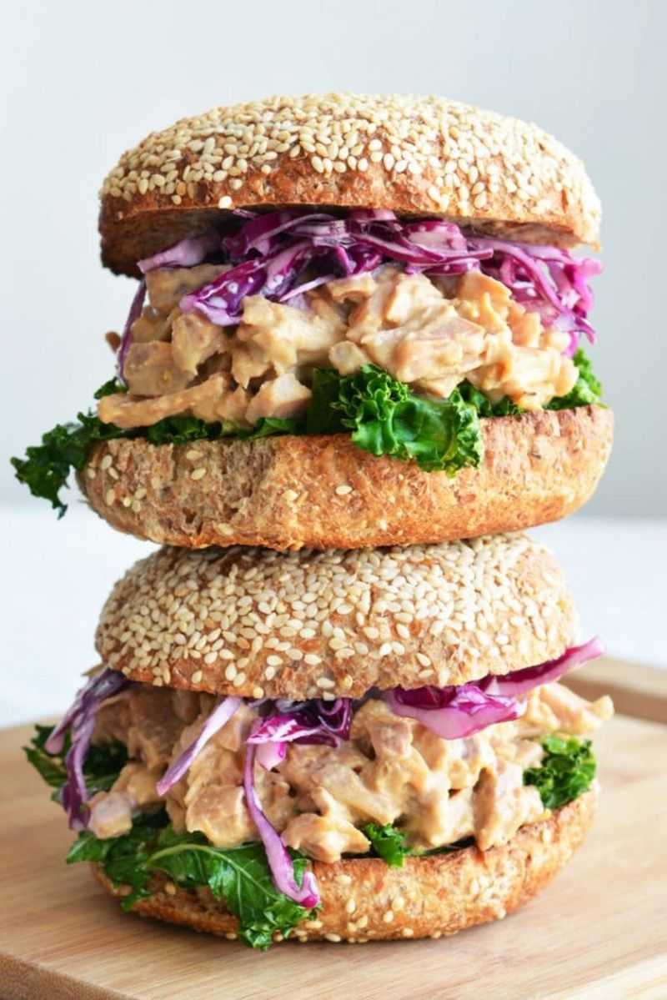

Honey Glazed Ham

Description
Does anyone else have a husband/wife/girlfriend/boyfriend/friend, etc.
who loves to eat but has little to say about it?
Ingredients
- 2 tablespoons tahini
- 2 tablespoons maple syrup
- 1 tablespoon tamari
- 1 teaspoon apple cider vinegar
- 1 teaspoon liquid smoke
- roughly ½ cups shredded jackfruit
- 2 cups shredded cabbage
- 2 tablespoons vegan mayo
- 1 tablespoon pickle brine
- 1 tablespoon olive oil
- 2 packed cups shredded kale
- 4 buns
- vegan mayo
- mustard
- any other condiments you like!
Steps
- To prepare the jackfruit, stir all the ingredients together in a medium bowl. Set aside.
- To prepare the slaw, stir all the ingredients together
in a small bowl. Set aside.
- To prepare the kale, heat the olive oil at medium-high in a pan.
Add the kale and sauteed until wilted (2-3 minutes).
- Toast the buns.
- To assemble the sandwiches, spread your condiments of choice
on the buns. You may choose to heat up the jackfruit but
it's also great at room temperature! Layer the sauteed kale,
jackfruit and slaw on top. Enjoy right away!
Back to main page